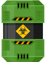
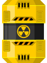
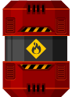
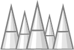
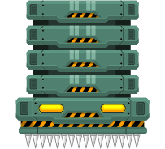
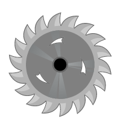

Não tema! Este aplicativo é exatamente para situações como essas. Não daremos nenhum spoiler, nem diremos nada que possa prejudicar a diversão da gameplay. Veja esta parte como dicas/tutorial, um detonado DrunkCOde.
Podemos dividir os obstáculos do jogo em 3: Inimigos, obstáculos estáticos e obstáculos dinâmicos. De forma simples, os inimigos te atacam, você pula e desvia dos outros. Falando assim parece bem facil não é? Mas eu te direi a melhor forma e o que deve esperar ou não de cada.
Exatamente como no trânsito, temos uma sinalização utilizando barris que nas três cores que possuem um semáforo:
1- O barril verde sinaliza para você que pode não haver um perigo a frente, ou pode existir algo para facilitar sua vida mais a frente.
2- Atenção! Na sua frente ou exatamente no loca onde você está, pode haver armadilhas ou inimigos a sua espreita, então fique atento para não ser pego desprevinido, afinal, o alerta foi dado.
3- Não podia ser diferente. Este barril vermelho sinaliza um grande perigo a frente. Mas não é apenas isto, ele pode indicar facilidades e dica sobre como passar uma armadilha, como um ponto cego. Não se engane, com grande benedícios ele pode trazer enormas malefícios... KABUUMM!!
4- Trap de espinhos! Cuidado onde pisa e com o que vem de cima. Um desses pode acabar empalando ou caindo na cabeça do Roberto, que é demasiadamente grande.
Ser dividido ao meio com certeza não deve ser uma sensação agradável. Eu com certeza não desejo experimentar, então cuidado onde pula, estes lasers não são brincadeira.
Esmagamento. Este pistão abaixo estará pronto para te esmagar e não deixar sobrar um pedaço para contar história.
Velozes e destrutivas. As serras com certeza irão de causar grande dano caso você se encontre com elas, ileso você não saíra... Com vida... Não sei hehe dependerá da sua sorte!
Os outros complicadores e empecilhos você deverá descobrir por conta própria. Mas fique atento, alguns inimigos tomam dano apenas em algumas áreas específicas, o que pode ser problemático para você.
Curioso sobre o restante do jogo? Basta jogar! Curioso sobre a produção do game? Volte uma casa e mate a sua curiosidade, antes que algum inimigo chegue lá antes.